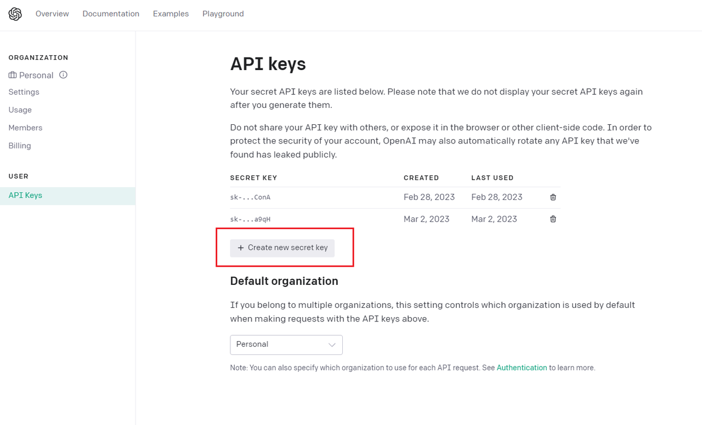

Call whisper api to finish transcribing audio to text, call google translate api to finish translating OriText to Chinese.
用户上传音视频文件，网页会调用 Whipser Api 将其转录为文本，然后再调用 Google Translate API 将文本翻译为中文。
由于需要调用 OpenAI 和 Google Translate 的 API ，请确保你本地的网络可以正常访问 Google
==> Quicker 本地版本

Afrikaans, Arabic, Armenian, Azerbaijani, Belarusian, Bosnian, Bulgarian, Catalan, Chinese, Croatian, Czech, Danish, Dutch, English, Estonian, Finnish, French, Galician, German, Greek, Hebrew, Hindi, Hungarian, Icelandic, Indonesian, Italian, Japanese, Kannada, Kazakh, Korean, Latvian, Lithuanian, Macedonian, Malay, Marathi, Maori, Nepali, Norwegian, Persian, Polish, Portuguese, Romanian, Russian, Serbian, Slovak, Slovenian, Spanish, Swahili, Swedish, Tagalog, Tamil, Thai, Turkish, Ukrainian, Urdu, Vietnamese, and Welsh.